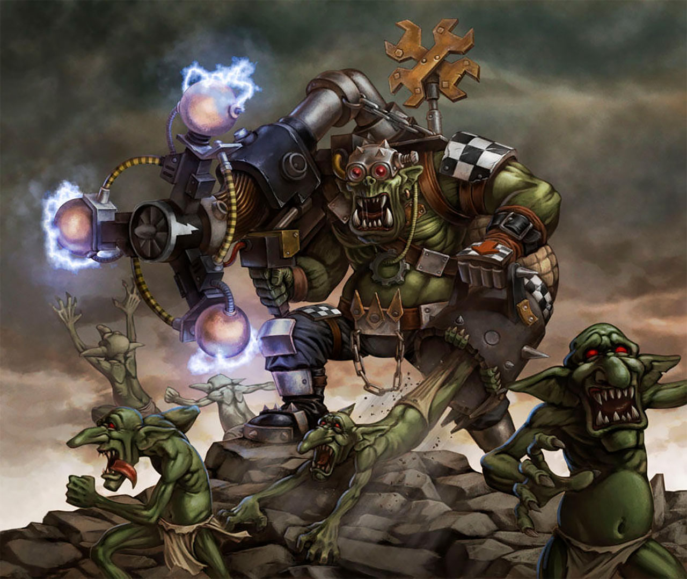
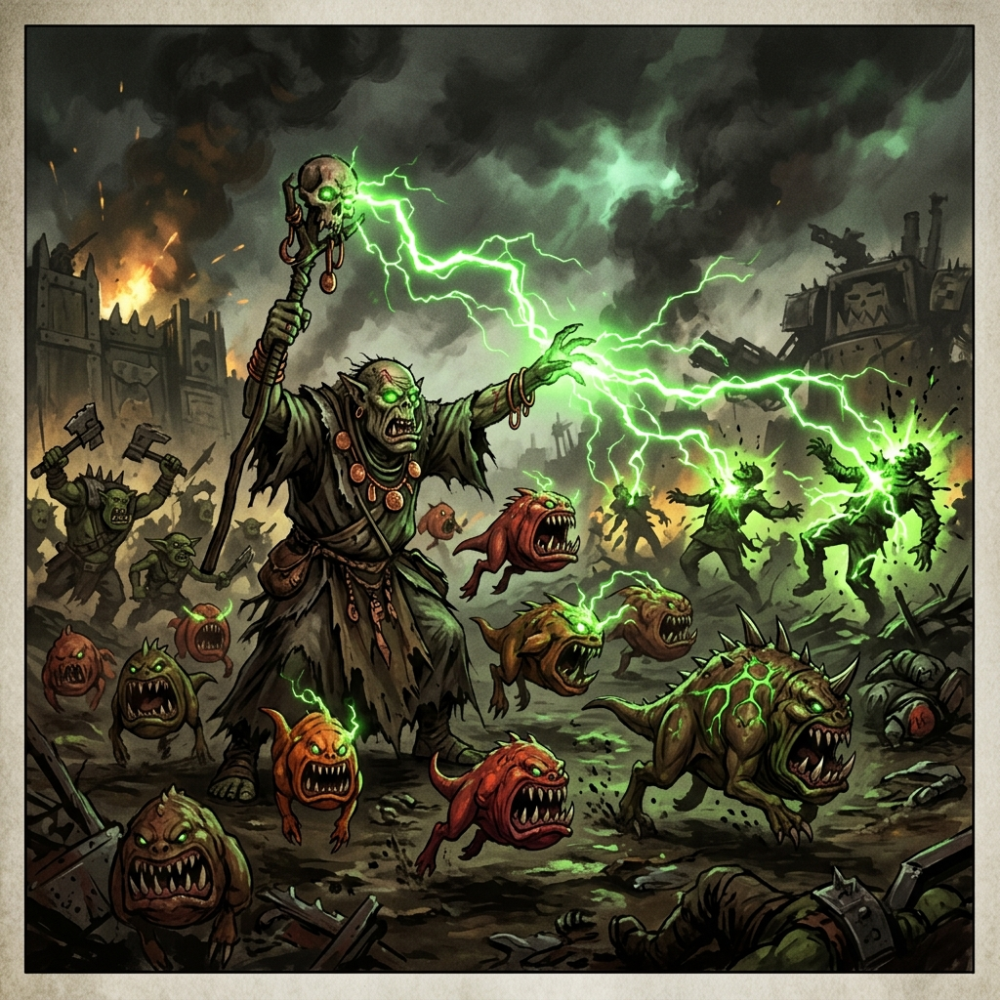
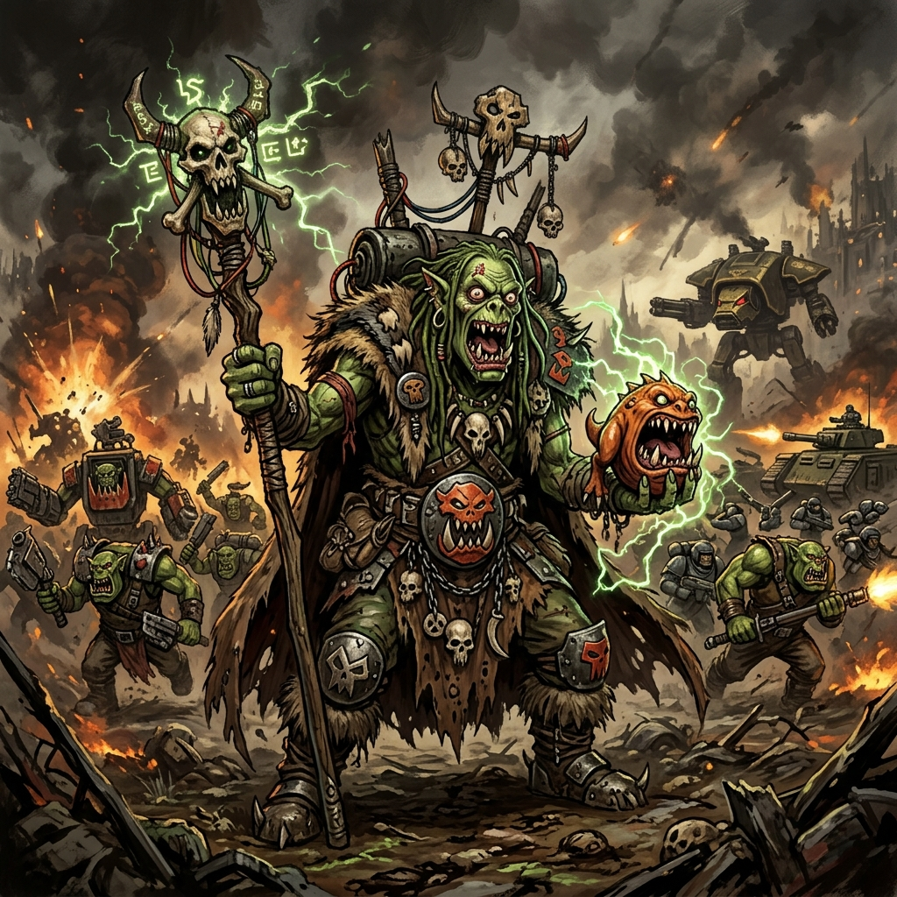

VELHO ZOGWORT
Weirdboy Supremo • O Shaman das Trevas • Transmutador de Squigs

Origem
O Velho Zogwort (Old Zogwort) é um dos mais insanos e letais psykers (Weirdboyz) que a raça Ork já produziu. Nascido no selvagem mundo de cruzada Ork e cego desde uma de suas primeiras manifestações de poder psíquico — quando seus olhos explodiram em chamas verdes — Zogwort sobreviveu através da pura força de vontade de Gork (ou Mork).
Ao invés de morrer como a maioria dos Weirdboyz que não conseguem controlar o Waaagh! gerado por orks próximos, o Velho Zogwort aprendeu a canalizar essas energias de maneira espetacular e devastadora. Ele começou a sua carreira como o feiticeiro residente da tribo Blood Axe, mas sua notoriedade cresceu tanto que Warbosses de diferentes planetas pagavam fortunas (em dentes) apenas para tê-lo em suas fileiras por uma batalha.
Hoje, ele vagueia de Waaagh! em Waaagh!, como um ermitão lunático acompanhado apenas por um rebanho de Squigs mutantes. Ninguém diz não para ele, não porque respeitam sua sabedoria, mas porque contrariar o Velho Zogwort é o caminho mais rápido para ser transformado magicamente em um pequeno monstro inofensivo.

Credo de Guerra
"Eles acha que pode me matar, hah! Gork diz que não! Mork diz que vou fritar os miolos deles com a mágica verde! Olha pra ele... vai virar um Squig bem gordo!"
Diferente de um Warboss que planeja táticas ou lidera o ataque frontal com pedaços gigantes de metal, Zogwort atua como a artilharia mística e caótica do bando. Sua mente frita pelas vozes de Gork e Mork faz com que sua visão do campo de batalha seja um mosaico bizarro de almas, energias da Disformidade e auras orkóides.
Ele não precisa de olhos para enxergar seus inimigos; ele sente a intenção hostil deles. O medo e o ódio que geram alimentam suas convulsões psíquicas, até ele vomitar relâmpagos mortais ou causar vômitos de sangue generalizados no inimigo.
Zogwort também é profundamente rancoroso. Líderes inimigos não são apenas destruídos; ele os condena à humilhação máxima ao aplicar sua famosa Maldição, transformando heróis venerados em abominações em formato de Squigs fofos e carnudos.
Capacidade Bélica
- A Maldição de Zogwort: O seu dom mais temido. Em combate singular, ele pode conjurar uma nuvem esmeralda que envolve o comandante inimigo. Quando a fumaça se dissipa, o herói não está mais lá, substituído por um Squig pequeno e confuso.
- Canalizador do Waaagh!: Consegue puxar energia passiva de todos os orks lutando a milhas de distância sem o perigo imediato de ter sua cabeça explodida (na maioria das vezes).
- Vômito Ectoplásmico e Raios Gorkianos: A habilidade de descarregar a energia ork em rajadas de relâmpagos verdes incontroláveis que calcinam esquadrões inteiros e derretem tanques de guerra.
- Cajado da Cabeça de Cobre (Coppa-head Staff): Um cajado adornado com cobre que o ajuda a "aterrar" os excessos de energia do Waaagh!, funcionando também como uma poderosa arma de concussão no combate corpo-a-corpo.
- Vibração Mística: Capaz de interromper a magia (feitiçaria ou poderes psíquicos) do Caos, Asuryani ou da Humanidade apenas rindo em frenesi de forma ensurdecedora.
Localização Atual: Em algum lugar no Segmentum Obscurus, seguindo o rastro de um grande Waaagh! Orkoide.
Status: Ativo - Causando pânico generalizado e mutações grotescas em campos de batalha.
